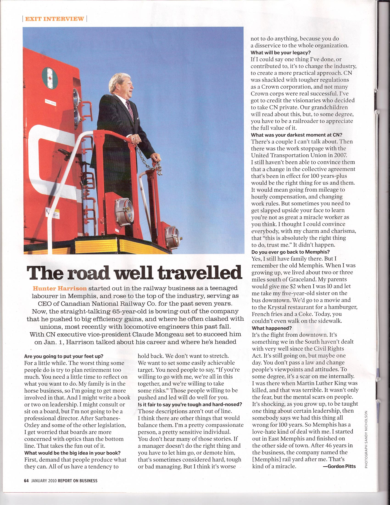

The Road Well Travelled
Hunter Harrison is widely regarded as the greatest railroad executive of his generation.
Why did you choose railroading?
I grew up near the railway and always had an interest in it. The industry fascinated me from a young age.
What makes a railroad successful?
Efficiency and discipline. Railways operate best when they are managed carefully and every train moves with purpose.
Interview by Railway Magazine